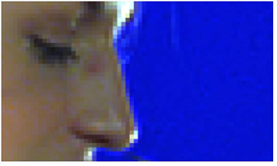
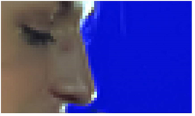

去噪节点是从镜头中去除噪音或纹理的有效工具。它使用空间过滤来去除噪声，而不会降低图像质量。
以下是工作流的快速概述:
| 1。 | 将去噪连接到要从中去除噪音的镜头。 |
请参阅 连接去噪 .
| 2. | 将分析框定位在合适的分析区域上。去噪自动分析该区域内的噪声结构，并从镜头中去除噪声。 |
请参阅 分析和去除噪音 .
| 3. | 查看结果。 |
请参阅 审查结果 .
| 4. | 如果你对结果不满意，你可以通过调整噪音轮廓、频率和信道来微调它们。 |
请参阅 微调 .
|
 |
| 去噪之前。 |
|
 |
| 去噪后。 |
提示:
你可以检查
使用 GPU (如果可用)
让节点在图形处理器 (GPU) 上运行，而不是在中央处理器 (CPU) 上运行。GPU 和 CPU 之间的输出在 NVIDIA GPU 上是相同的，但是使用 GPU 可以显著提高处理性能。
Nuke
在 2013年底的 Mac Pro 6,1 和 2015年中的 Mac Pro 11,5 上支持 AMD gpu，运行 OS X 10.9.3 “mavericks” 或更高版本。虽然，在某些情况下，GPU 和 CPU 之间的比特级相等保持不变，但对于某些操作，这种配置可能存在精度限制。
有关最低要求的更多信息，请参见
GPU 加速要求
或指
Nuke
中提供的发行说明
帮助
>
发行说明
.
您可以选择要在首选项中使用的 GPU。新闻
转变
S
要打开
偏好
对话框中，确保您正在查看
偏好
>
性能
>
硬件
标签，并设置
默认闪烁设备
到您要使用的设备。您必须重新启动
Nuke
以便变更生效。
如果您正在使用 Nuke 的渲染许可证，您需要添加
-- Gpu
在命令行上。
|
|